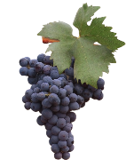

Prestadores turisticos
En Mendoza, hay numerosos prestadores turísticos que ofrecen una amplia gama de servicios para satisfacer las necesidades de los visitantes. Estos prestadores pueden incluir desde agencias de viajes y operadores turísticos hasta servicios de alojamiento y actividades específicas.
- Agencias de Viajes y Operadores Turísticos: Organizan tours y excursiones por Mendoza y sus alrededores, incluyendo visitas a bodegas, trekking en montañas como el Aconcagua, rafting en ríos locales, y tours culturales por la ciudad y sus alrededores.
- Bodegas y Viñedos: Ofrecen tours guiados y degustaciones de vinos, proporcionando una experiencia educativa sobre la producción de vinos y la cultura vitivinícola de la región. Algunas bodegas también ofrecen servicios de hospedaje y gastronomía.
- Hoteles, Hostales y Estancias: Proporcionan alojamiento para los turistas, desde hoteles de lujo y boutique en la ciudad de Mendoza hasta estancias rurales y hostales en zonas cercanas a las bodegas y atractivos naturales.
- Empresas de Transporte: Ofrecen servicios de traslado y alquiler de autos, permitiendo a los visitantes moverse cómodamente dentro de Mendoza y explorar sus alrededores a su propio ritmo.
- Servicios de Aventura y Deportes: Compañías especializadas en actividades al aire libre como trekking, montañismo, rafting, rappel, y tours en bicicleta o a caballo, aprovechando el entorno natural único de Mendoza.
Alojamientos

Rentadoras de autos
Mejores bodegas
Agencias de turismo habilitadas en la provincia
Pinchando en los iconos de arriba podes saber más sobre los prestadores de la provincia!